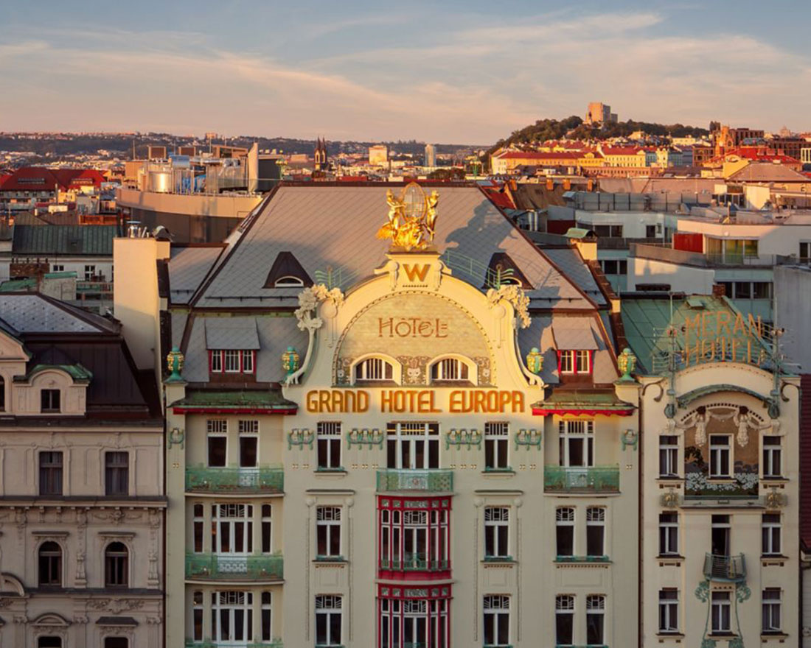
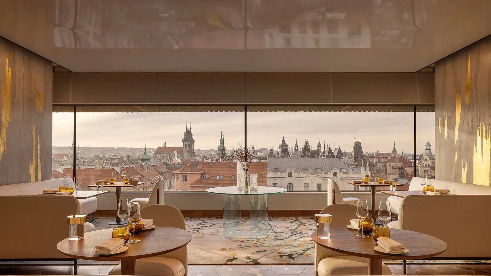
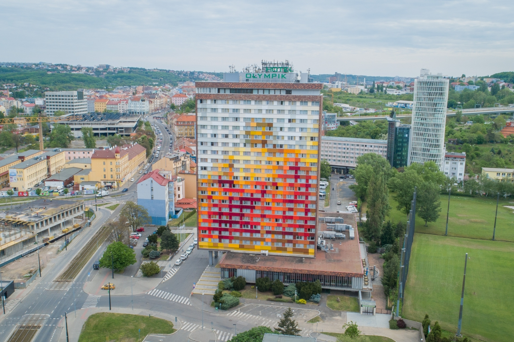
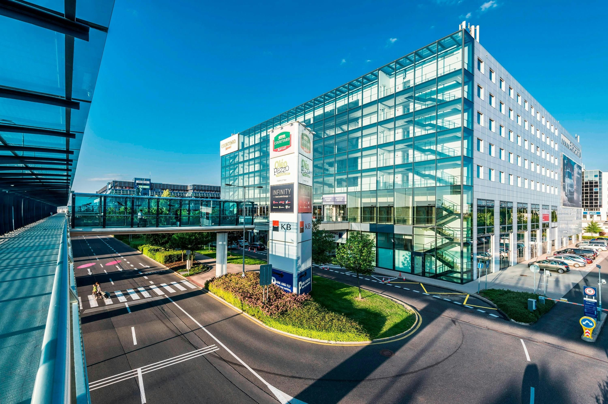

There are no bad spots to stay in Prague. If you prefer to be part of the action, you can stay near Old Town Square where you will be in the center of the city and all of the action. If you prefer a bit more peace and quiet, try staying a bit further from the center, like the Karlín neighborhood. Karlín still has plenty going on and you will be well-connected with access to the vast metro, tram, and bus lines.

W Prague

Fairmont Golden

Hotel Olympik

Courtyard
Overlooking the famous Wenceslas Square, this chic, recently rennovated hotel is exquisite and meant for those who are looking for the finer things in life. When you need a break from the hustle and bustle of the city, relax in their world class spa.
This hotel is situated at the end of the luxurious Pařížská street. Newly constructed and overflowing with elegant charm, you can't find a better accommodation in Prague.
This hotel is a staple for students and travellers who want to get away on a budget. Just a few stops from downtown by both tram and metro, this is a great base of operations for an experienced traveller.
This hotel is located about 100 m from the entrance to the international terminal of the Prague Airport. If you need a place to stay the night before an early flight, it doesn't get much more convenient than this.